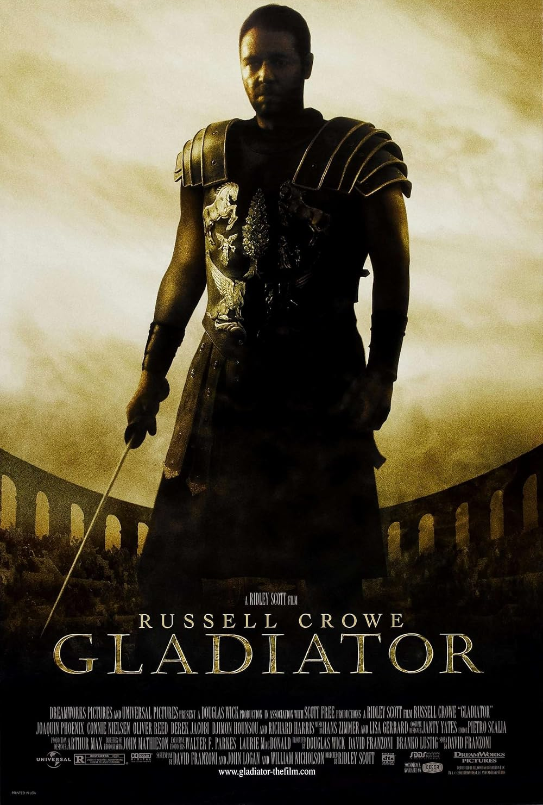

- Related Films
- Gladiator II
| Watched | ||
|---|---|---|
| Nominations | |||
|---|---|---|---|
| Category | Nominees | Result | Voted |
| Best Picture | Branko Lustig, David Franzoni, Douglas Wick | Won | |
| Actor in a Leading Role | Russell Crowe | Won | |
| Actor in a Supporting Role | Joaquin Phoenix | Nominated | |
| Directing | Ridley Scott | Nominated | |
| Writing (Screenplay Written Directly for the Screen) | David Franzoni, John Logan, and William Nicholson | Nominated | |
| Cinematography | John Mathieson | Nominated | |
| Film Editing | Pietro Scalia | Nominated | |
| Art Direction | Arthur Max and Crispian Sallis | Nominated | |
| Costume Design | Janty Yates | Won | |
| Visual Effects | John Nelson, Neil Corbould, Rob Harvey, and Tim Burke | Won | |
| Sound | Bob Beemer, Ken Weston, and Scott Millan | Won | |
| Music (Original Score) | Hans Zimmer | Nominated | |